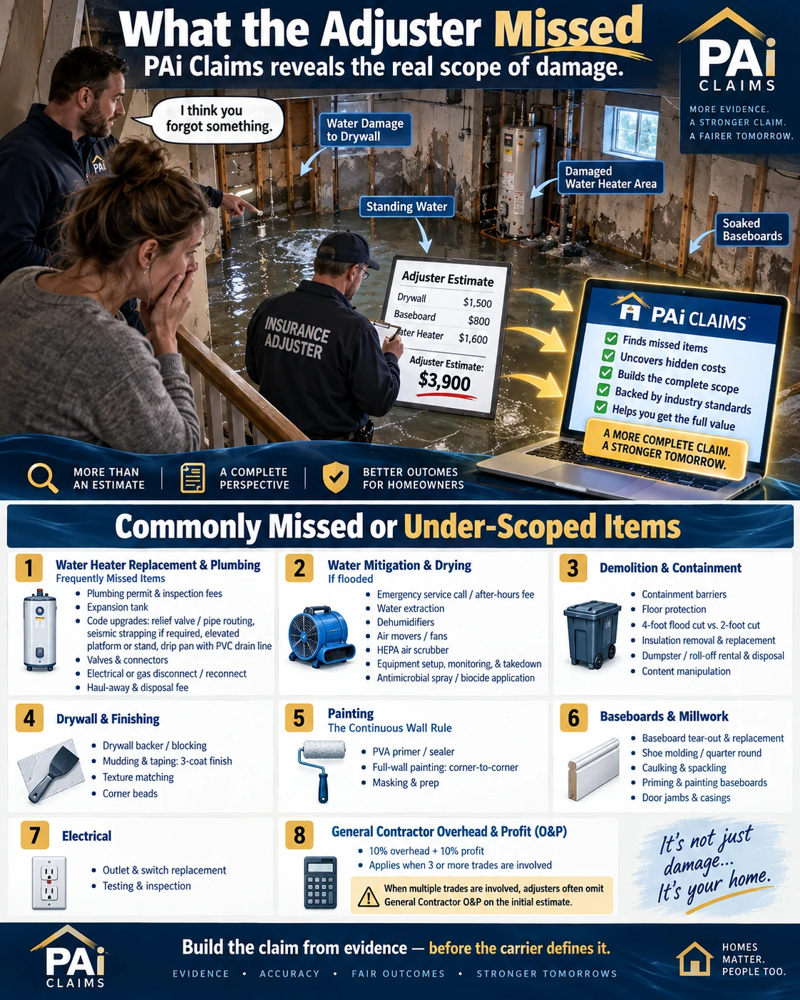
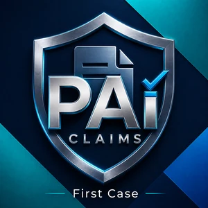

The New Faith Church and Co-op, Inc. · 501(c)(3)
Helping disaster survivors document, recover, and rebuild.
When a storm takes the roof off a house, the family under it is suddenly negotiating with a company that does this every day — backed by adjusters, engineers and lawyers — while they do it for the first time, in the worst week of their life.
NFCcop exists to help close that gap. We provide tools for documentation, estimating, and organization to help people work with their own records, with clear costs and a choice of local or external AI processing.
Who we serve
People facing a property insurance claim without the money to hire help.
Disaster survivors
After a hurricane, flood, hail or fire, when the first estimate arrives weeks before the repairs do.
Denied policyholders
Households told no, or offered a fraction of what the repair costs, with no obvious way to challenge it.
People representing themselves
Anyone answering a lawsuit or building a case without a lawyer, who needs the vocabulary explained rather than assumed.
Relief and legal aid partners
Disaster case managers, VOAD agencies and pro bono clinics serving survivors at scale.
How we help
Free information first. Tools second. Nothing required to read anything here.
Research on questions that affect a claim
Plain-language explainers on overhead and profit, matching, labor depreciation, appraisal, ordinance or law, deductibles and bad faith — written from the contracting side, with free case-law searches so you can read what courts in your own state have said.
Read the research →A directory of free help
Your state insurance department, how to file a complaint, disaster aid, legal aid, and the weather records that prove the event happened. All independent, all free, none of it ours.
Open the resource directory →Guides for the moment you are in
Served with a lawsuit, denied claim, or representing yourself — each one written for someone who has never done this before.
A denied claim →Software carried by the nonprofit
Windows software to organize evidence, develop an estimate, and manage related case records. Downloads are free; claim and case creation terms are explained on our pricing page.
Explore the tools →
What an adjuster's first estimate leaves out
An illustrated flooded-basement example shows repair items worth checking when reviewing an estimate. You can read and use these resources whether or not you use our software.

Overhead & profit
Check whether the estimate addresses general-contractor coordination and overhead and profit. A trade count alone does not establish entitlement; the circumstances and policy matter.
What courts have said →Code upgrades
Relief valve, elevated platform, drip pan, permit and inspection fees — the code requirements a repair triggers on an older house.
Ordinance or law coverage →Matching
Paint corner to corner, not a spot patch; flooring across the continuous run. Whether the carrier owes it turns on your state's rule.
Matching and uniform appearance →Depreciation
Check which costs were depreciated and why. Whether labor can be depreciated depends on the policy and applicable law, and can affect the initial payment.
Depreciation of labor →Software that supports the work
Two Windows programs, free to download. Review pricing and access before starting a claim or case. Existing work remains available without another feature paywall.

PAi Claims
Turns your photos, policy and measurements into an itemized, priced repair estimate, so the claim is defined by the evidence instead of by the first low offer. The first claim has a creation fee; see pricing.
What it does →{kind=link}
Promotional illustration; see the product page for currently available features and research options.
PAi Legal
Indexes complaints, motions, exhibits and depositions, separates what is alleged from what your documents prove, and switches between attorney and plain language. The first case terms are on our pricing page.
What it does →Where to start
My insurance claim was denied
What a denial actually means, and what to do in the first week.
Start here →I was served with a lawsuit
What the deadline is, what an answer has to contain, and what happens if you miss it.
Start here →I am representing myself
The whole process narrated in order, with each gap named as a specific errand.
Start here →I work with survivors
For disaster case managers, VOAD agencies and legal aid clinics.
Partner with us →Ways to help
Donate
Your gift supports software development and outreach to disaster-hit communities. Tax-deductible to the fullest extent allowed by law.
Donate nowVolunteer
Share our work with a hard-hit community, help a survivor document a claim, or write and translate plain-language guides.
Get involved →Need help with software access?
If you cannot afford PAi software, contact us to request free access. Read about our programs and our funding status.